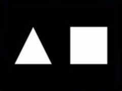

|
第02課 |
 |
|  |
你的第一個多邊形:
在第一個教程的基礎上，我們添加了一個三角形和一個四邊形。也許你認為這很簡單，但你已經邁出了一大步，要知道任何在OpenGL中繪製的模型都會被分解為這兩種簡單的圖形。
讀完了這一課，你會學到如何在空間放置模型，並且會知道深度緩存的概念。 |
|
 |
|
第一課中，我教您如何創建一個OpenGL窗口。這一課中，我將教您如何創建三角形和四邊形。我們講使用來創建GL_TRIANGLES一個三角形，GL_QUADS來創建一個四邊形。
在第一課代碼的基礎上，我們只需在DrawGLScene()過程中增加代碼。下面我重寫整個過程。如果您計劃修改上節課的代碼，只需用下面的代碼覆蓋原來的DrawGLScene()就可以了。 |
|
int DrawGLScene(GLvoid) // 此過程中包括所有的繪製代碼
{
glClear(GL_COLOR_BUFFER_BIT | GL_DEPTH_BUFFER_BIT); // 清除屏幕及深度緩存
glLoadIdentity(); // 重置當前的模型觀察矩陣
|
當您調用glLoadIdentity()之後，您實際上將當前點移到了屏幕中心，X坐標軸從左至右，Y坐標軸從下至上，Z坐標軸從裡至外。OpenGL屏幕中心的坐標值是X和Y軸上的0.0f點。中心左面的坐標值是負值，右面是正值。移向屏幕頂端是正值，移向屏幕底端是負值。移入屏幕深處是負值，移出屏幕則是正值。
glTranslatef(x, y, z)沿著 X, Y 和 Z 軸移動。根據前面的次序，下面的代碼沿著X軸左移1.5個單位，Y軸不動(0.0f)，最後移入屏幕6.0f個單位。注意在glTranslatef(x,
y, z)中當您移動的時候，您並不是相對屏幕中心移動，而是相對與當前所在的屏幕位置。 |
|
glTranslatef(-1.5f,0.0f,-6.0f); // 左移 1.5 單位，並移入屏幕 6.0
|
現在我們已經移到了屏幕的左半部分，並且將視圖推入屏幕背後足夠的距離以便我們可以看見全部的場景－創建三角形。glBegin(GL_TRIANGLES)的意思是開始繪製三角形，glEnd()
告訴OpenGL三角形已經創建好了。通常您會需要畫3個頂點，可以使用GL_TRIANGLES。在絕大多數的顯卡上，繪製三角形是相當快速的。如果要畫四個頂點，使用GL_QUADS的話會更方便。但據我所知，絕大多數的顯卡都使用三角形來為對像著色。最後，如果您想要畫更多的頂點時，可以使用GL_POLYGON。
本節的簡單示例中，我們只畫一個三角形。如果要畫第二個三角形的話，可以在這三點之後，再加三行代碼(3點)。所有六點代碼都應包含在glBegin(GL_TRIANGLES)
和 glEnd()之間。在他們之間再不會有多餘的點出現，也就是說，(GL_TRIANGLES) 和 glEnd()之間的點都是以三點為一個集合的。這同樣適用於四邊形。如果您知道實在繪製四邊形的話，您必須在第一個四點之後，再加上四點為一個集合的點組。另一方面，多邊形可以由任意個頂點，(GL_POLYGON)不在乎glBegin(GL_TRIANGLES)
和 glEnd()之間有多少行代碼。
glBegin之後的第一行設置了多邊形的第一個頂點，glVertex 的第一個參數是X坐標，然後依次是Y坐標和Z坐標。第一個點是上頂點，然後是左下頂點和右下頂點。glEnd()告訴OpenGL沒有其他點了。這樣將顯示一個填充的三角形。
|
|
glBegin(GL_TRIANGLES); // 繪製三角形
glVertex3f( 0.0f, 1.0f, 0.0f); // 上頂點
glVertex3f(-1.0f,-1.0f, 0.0f); // 左下
glVertex3f( 1.0f,-1.0f, 0.0f); // 右下
glEnd(); // 三角形繪製結束
|
在屏幕的左半部分畫完三角形後，我們要移到右半部分來畫正方形。為此要再次使用glTranslate。這次右移，所以X坐標值為正值。因為前面左移了1.5個單位，這次要先向右移回屏幕中心(1.5個單位)，再向右移動1.5個單位。總共要向右移3.0個單位。 |
|
glTranslatef(3.0f,0.0f,0.0f); // 右移3單位
|
現在使用GL_QUADS繪製正方形。與繪製三角形的代碼相類似，畫四邊形也很簡單。唯一的區別是用GL_QUADS來替換了GL_TRIANGLES。並增加了一個點。我們使用順時針次序來畫正方形－左上－右上－右下－左下。採用順時針繪製的是對象的後表面。這就是說我們所看見的是正方形的背面。逆時針畫出來的正方形才是正面朝著我們的。現在這對您來說並不重要，但以後您必須知道。 |
|
glBegin(GL_QUADS); // 繪製正方形
glVertex3f(-1.0f, 1.0f, 0.0f); // 左上
glVertex3f( 1.0f, 1.0f, 0.0f); // 右上
glVertex3f( 1.0f,-1.0f, 0.0f); // 左下
glVertex3f(-1.0f,-1.0f, 0.0f); // 右下
glEnd(); // 正方形繪製結束
return TRUE; // 繼續運行
}
|
最後換掉窗口模式下的標題內容。 |
|
if (keys[VK_F1]) // F1鍵按下了麼?
{
keys[VK_F1]=FALSE; // 若是，使對應的Key數組中的值為 FALSE
KillGLWindow(); // 銷毀當前的窗口
fullscreen=!fullscreen; // 切換 全屏 / 窗口 模式
// 重建 OpenGL 窗口(修改)
if (!CreateGLWindow("NeHe's 第一個多邊形程序",640,480,16,fullscreen))
{
return 0; // 如果窗口未能創建，程序退出
}
}
 |
|
 |
|
在這一課中，我已試著盡量詳細的解釋與多邊形繪製有關的步驟。並創建了一個繪製三角形和正方形的OpenGL程序。如果您有什麼意見或建議請給我EMAIL。如果您認為有什麼不對或可以改進，請告訴我。我想做最好的OpenGL教程並對您的反饋感興趣。
 |
版權與使用聲明:
我是個對學習和生活充滿激情的普通男孩,在網絡上我以DancingWind為暱稱，我的聯繫方式是zhouwei02@mails.tsinghua.edu.cn，如果你有任何問題，都可以聯繫我。
引子
網絡是一個共享的資源，但我在自己的學習生涯中浪費大量的時間去搜索可用的資料，在現實生活中花費了大量的金錢和時間在書店中尋找資料，於是我給自己起了個暱稱DancingWind，其意義是想風一樣從各個知識的站點中吸取成長的養料。在飄蕩了多年之後，我決定把自己收集的資料整理為一個統一的資源庫。
版權聲明
所有DancingWind發表的內容，大多都來自共享的資源，所以我沒有資格把它們據為己有，或聲稱自己為這些資源作出了一點貢獻。故任何人都可以複製，修改，重新發表，甚至以自己的名義發表，我都不會追究，但你在做以上事情的時候必須保證內容的完整性，給後來的人一個完整的教程。最後，任何人不能以這些資料的任何部分，謀取任何形式的報酬。
發展計劃
在國外，很多資料都是很多人花費幾年的時間慢慢積累起來的。如果任何人有興趣與別人共享你的知識，我很歡迎你與我聯繫，但你必須同意我上面的聲明。
感謝
感謝我的母親一直以來對我的支持和在生活上的照顧。
感謝我深愛的女友田芹，一直以來默默的在精神上和生活中對我的支持，她甚至把買衣服的錢都用來給我買書了，她真的是我見過的最好的女孩，希望我能帶給她幸福。
資源下載:
文檔 網頁格式
PDF格式
源碼 RAR格式 |
|
|